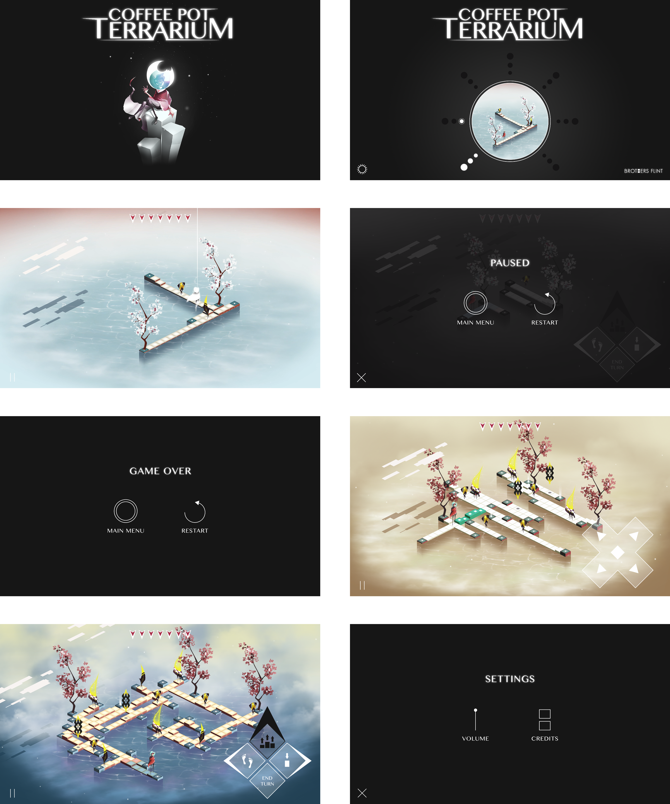
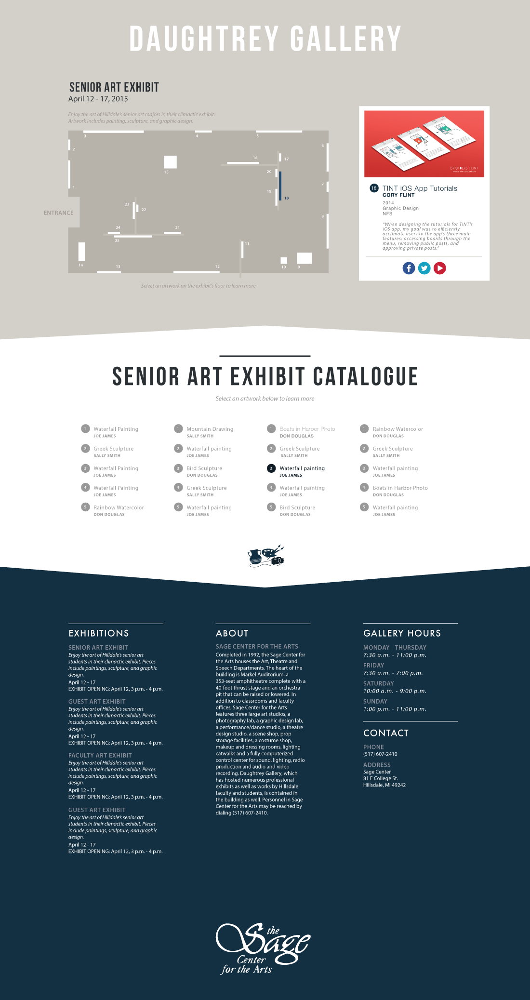
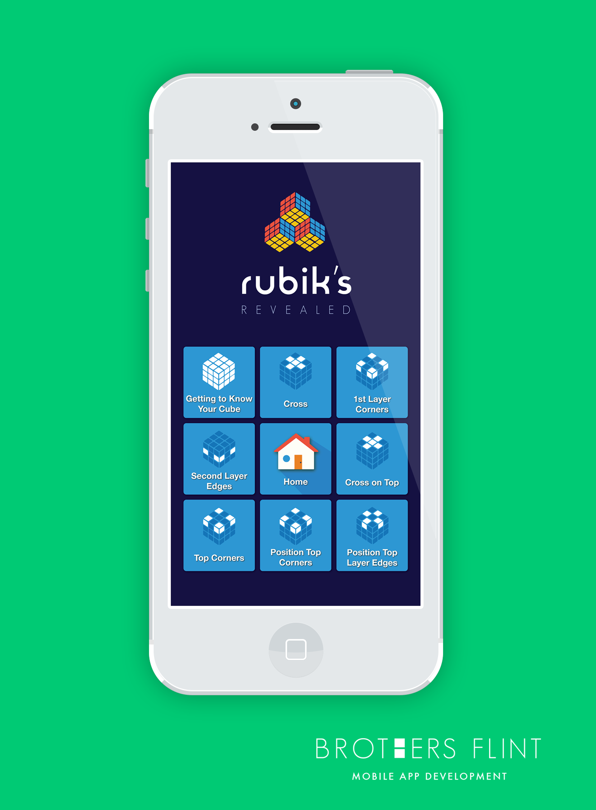
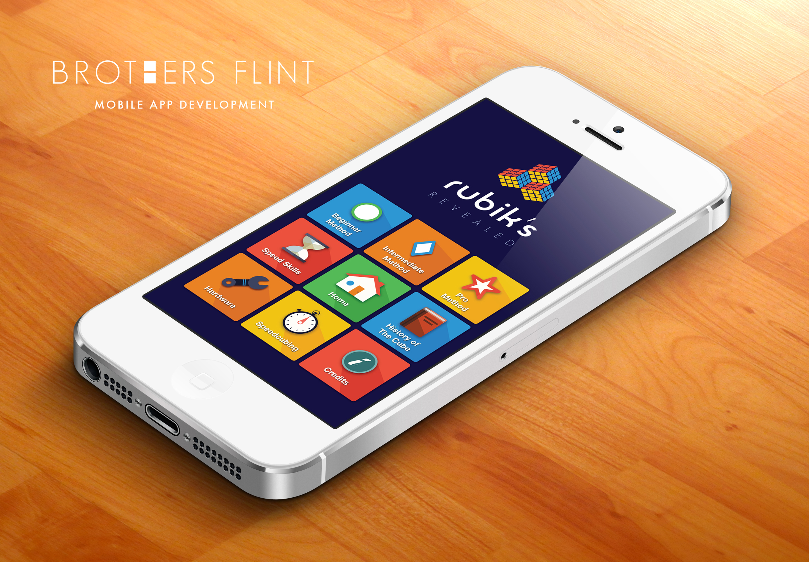
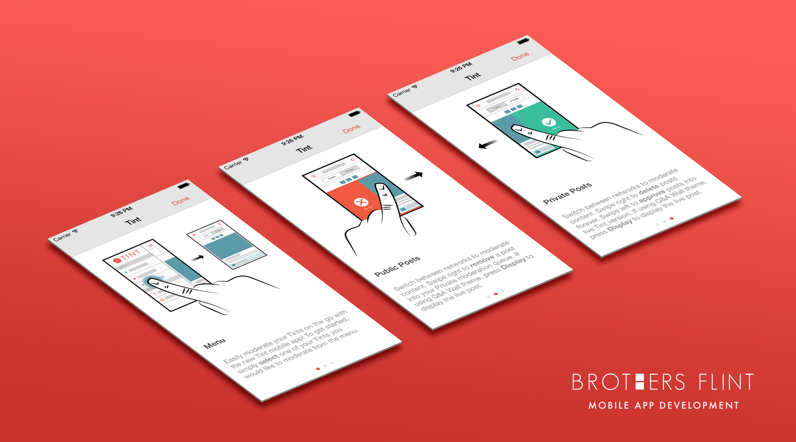
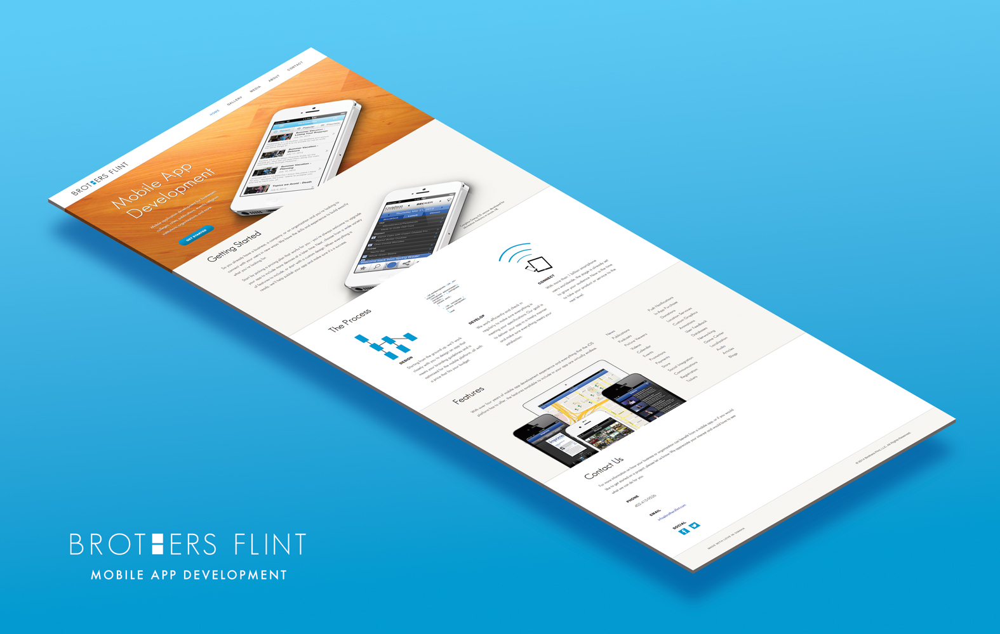
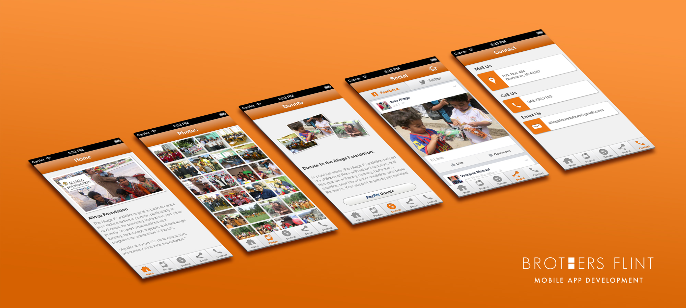
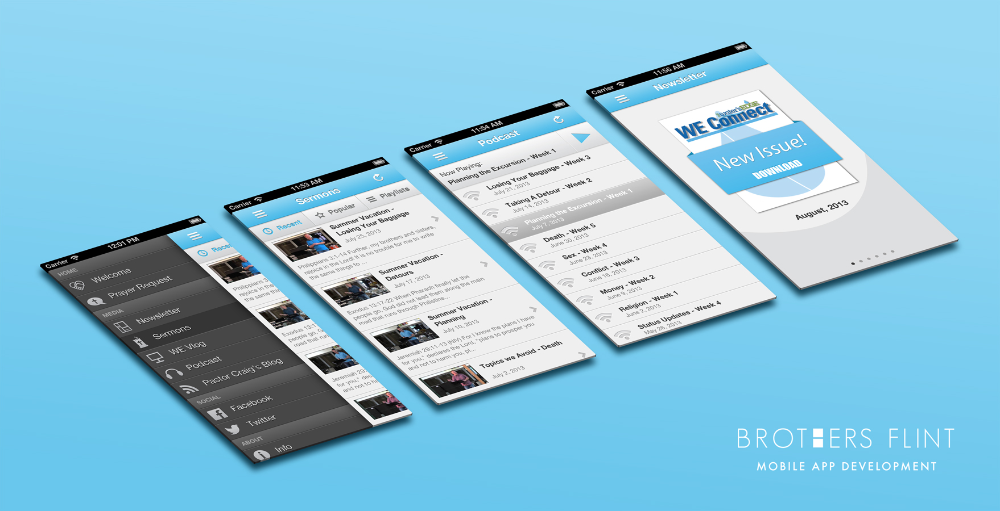
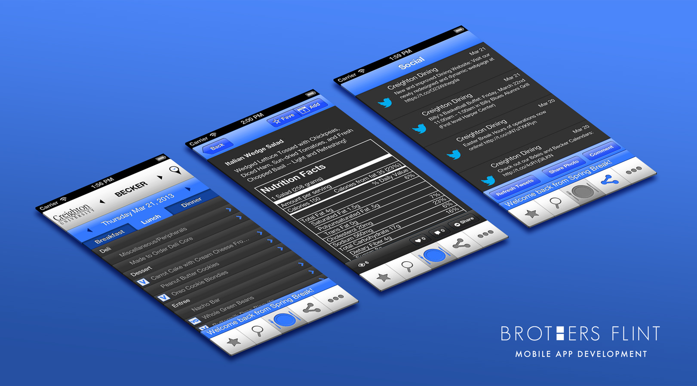

Main menus, level selection, daily bonus, pause and game over menus, shop, settings, and tutorials. I'm working on adding more screens in the coming weeks, in addition to some wireframes and user flows.

Coffee Pot Terrarium screenshots

Hillsdale College Daughtrey Art Gallery website mockup - 2015

Rubiks Revealed beginner method mobile app mockup - 2014

Rubiks Revealed home screen mobile app mockup - 2014

TINT tutorial mockups - 2014

Brothers Flint mobile application development website - 2014

Aliaga Foundation mobile app mockups - 2013

Water's Edge Church mobile app mockups - 2012

Creighton University Dining App mockups - 2011
Creighton Dining iOS version developed for Information Analytics in Lincoln, NE